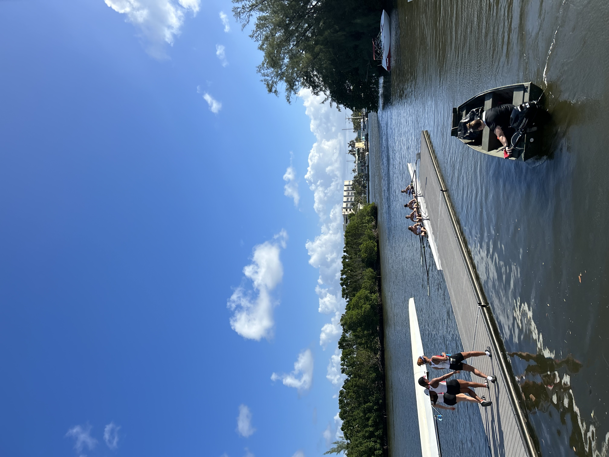
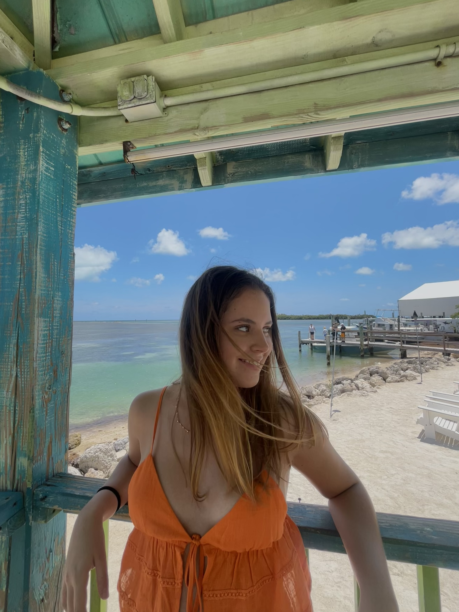
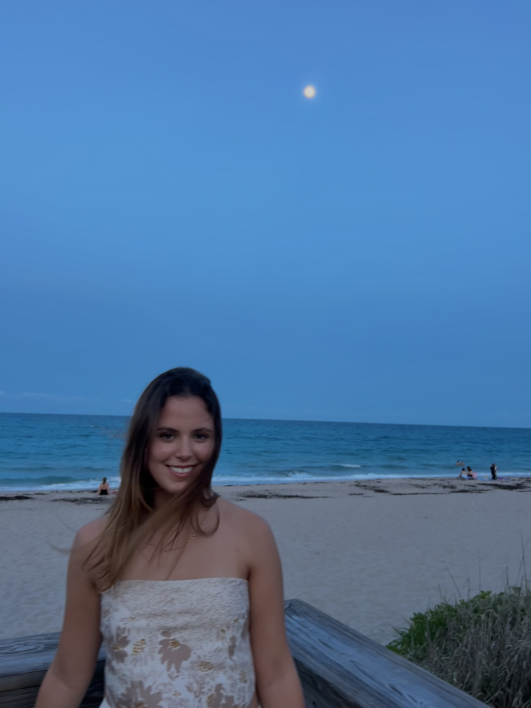
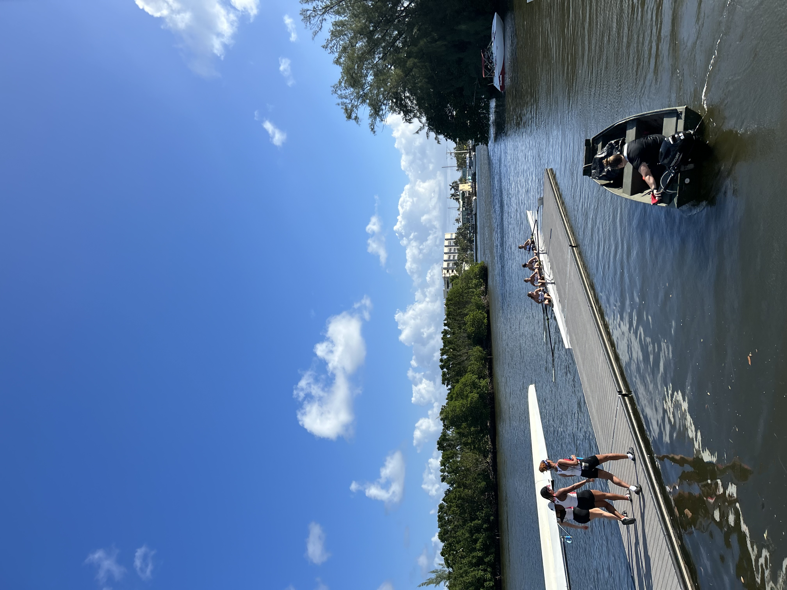
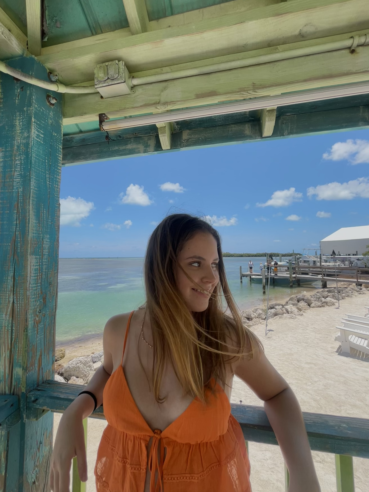
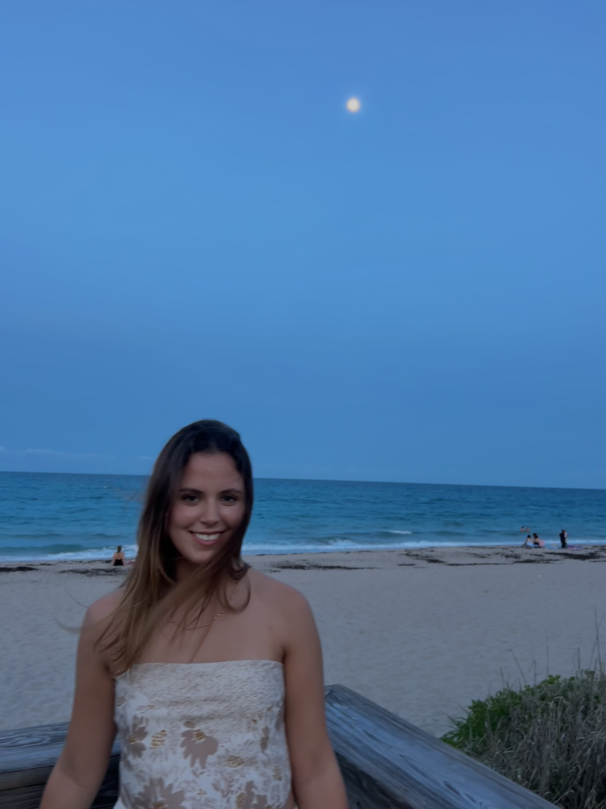
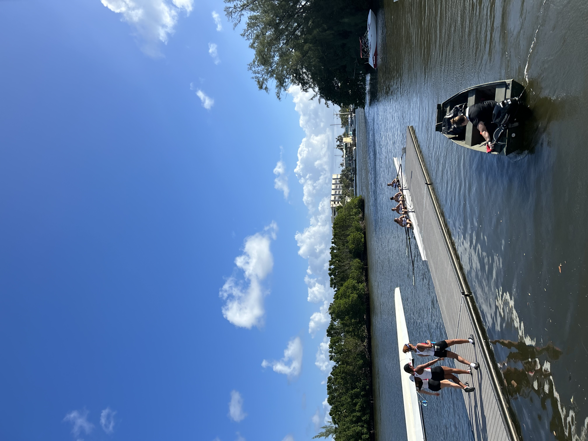
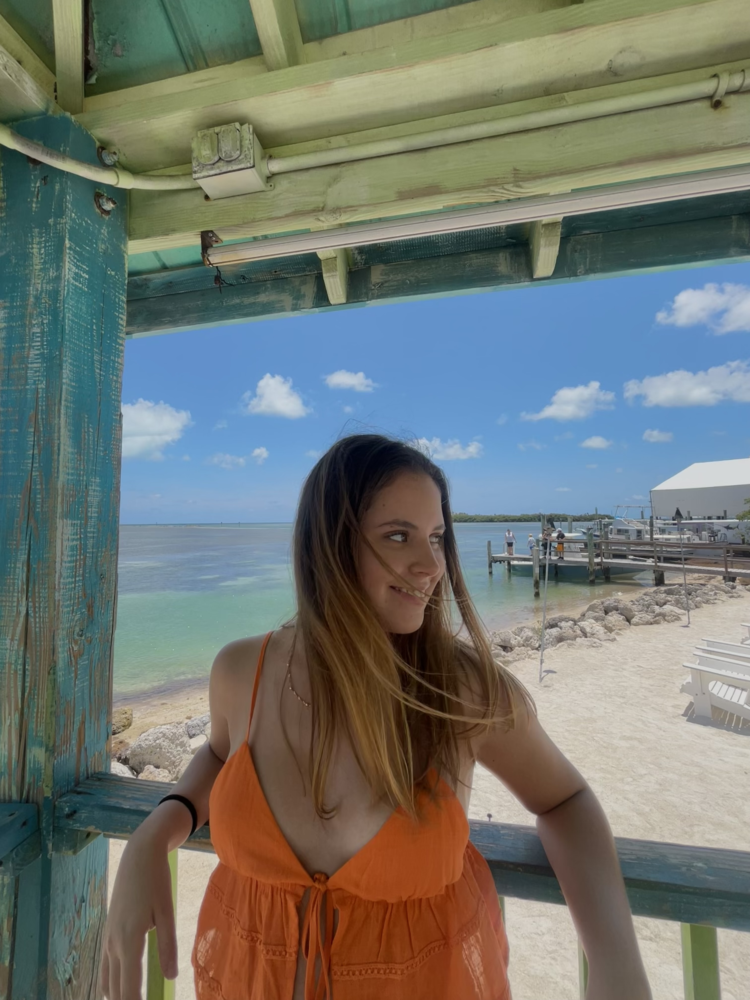
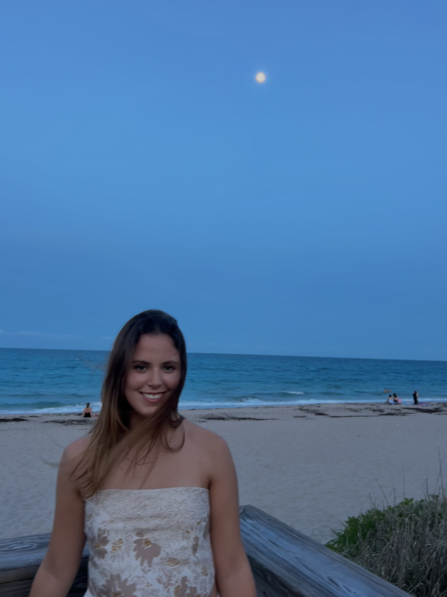

Hi! I’m Danna, an international student from Peru studying Finance and Economics at Nova Southeastern University. I started my academic journey in Computer Science, which I explored for a year and a half after learning to code through Kode With Klossy, where I completed the two-week camps in 2022. Over time, I discovered that my interests aligned more closely with financial systems and their role in driving real-world impact, which led me to pivot into finance.
My current interests include investment banking, private equity, asset management, corporate finance, and financial technology, especially as they relate to economic development in the mining, energy, and TMT sectors. I’m currently part of my university’s Student Managed Investment Fund and have held roles in accounting, mentoring, and marketing. As a former student athlete on the rowing team, I value discipline, structure, and resilience, whether I’m on the water or in the classroom. In my free time, I enjoy reading, running, baking, remixing music, and staying curious about how global markets and innovation intersect.


